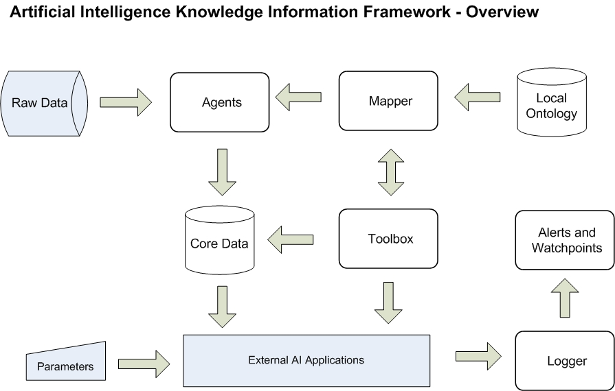

Artificial Intelligence Knowledge Information Framework
This is an information classification framework that maps structured or freeform data to a standard knowledge store.Raw data is collected via Agents and the Mapper uses your business rules to convert and store the information in a machine usable format (by linking to ontologies).
Your AI software can link to AIKIF by setting up logging watch-points to define success / failure along with the range of input parameters. Goals and plans are defined by breaking them down to smaller tasks until the task can be run by a tool in the Toolbox.
